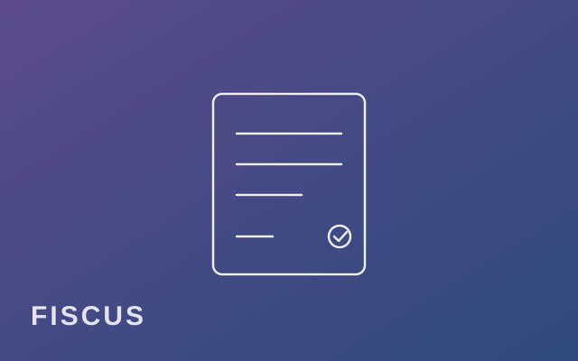
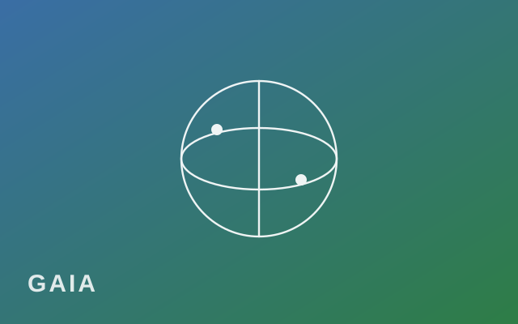
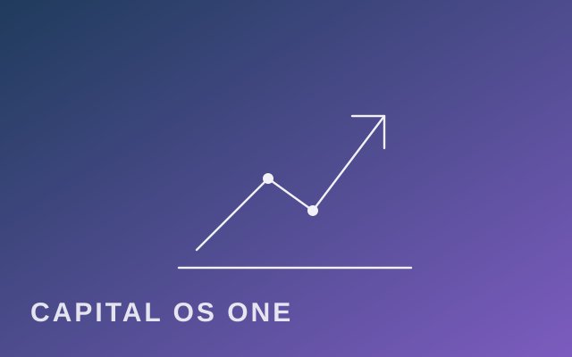
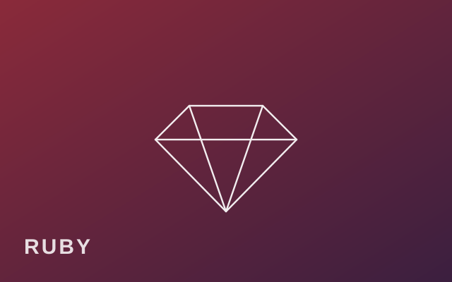
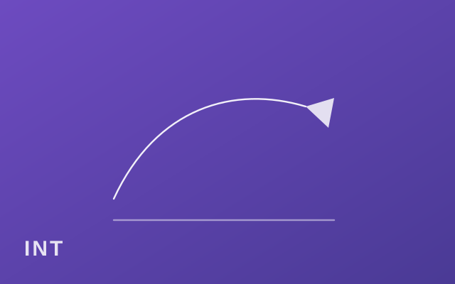
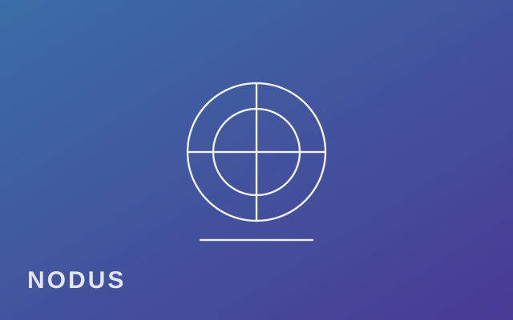
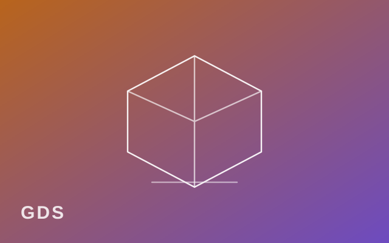
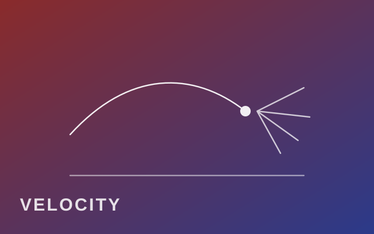

Logiciels
Des logiciels qui font tourner l’atelier.
Tout est conçu et construit en interne, sans sous-traitance. Atlas Studio Pro est disponible et tourne en production chez nous. Les autres tournent déjà en atelier, sur nos propres projets, et s’ouvriront quand ils seront prêts à être vendus. Chaque fiche dit ce qu’il fait, et ce qui marche déjà.
Disponible aujourd’hui
Atlas Studio Pro, le logiciel qui fait tourner une entreprise
Atlas Studio Pro
DisponibleAtlas Studio Pro est un environnement de gestion nouvelle génération qui réunit clients, devis, factures, encaissements, TVA, stock, documents, courrier et outils métier dans une seule application.
Mais Atlas ne se limite pas à centraliser la gestion : il intègre un Concierge IA capable de comprendre une demande en langage naturel, de retrouver une information, de préparer une action et d’orienter l’utilisateur vers le bon outil, tout en conservant une validation humaine pour les opérations sensibles.
- Un Concierge IA au cœur du logiciel. Demandez à Atlas de retrouver un client, de préparer un devis, de rechercher un document, de comprendre une situation ou d’accéder à la bonne fonction. L’IA travaille directement avec le contexte de votre entreprise.
- Une IA européenne avec Mistral. Les fonctions d’intelligence artificielle d’Atlas sont conçues autour de Mistral et d’une architecture qui privilégie les traitements européens.
- Une infrastructure principale hébergée en France. Les services principaux d’Atlas sont hébergés en France, avec une architecture pensée pour garder la maîtrise des données professionnelles.
- Une sauvegarde hors site dans l’Union européenne. Les données sont également sauvegardées sur une infrastructure distincte située en Allemagne, afin de réduire le risque lié à la perte d’un serveur ou d’un site principal.
- Sécurité et traçabilité intégrées. Atlas combine isolation des entreprises, contrôles d’accès, journalisation, sauvegardes, mécanismes de vérification et protections sur les opérations sensibles.
- Des données protégées pendant leur stockage et leurs échanges. Les mécanismes de chiffrement et de sécurisation sont intégrés aux différentes couches de l’infrastructure, sans prétendre à une inviolabilité absolue.
- Une IA sous contrôle. Atlas prépare, propose et automatise certaines tâches, mais les actions sensibles restent soumises à des règles de validation.
- Une interface adaptée à votre métier. Chaque entreprise peut afficher les applications réellement utiles à son activité, à son équipe ou à chaque utilisateur.
- Deux façons de travailler. Un véritable bureau à fenêtres pour organiser plusieurs outils simultanément, ou une vue plus directe par applications.
- Un environnement unique. Clients, facturation, documents, stock, courrier, outils métier et IA partagent le même système au lieu d’être dispersés entre plusieurs abonnements.
- Pensé pour la facture électronique. Atlas est conçu pour accompagner progressivement les entreprises vers les nouveaux usages de facturation et d’échange électronique.
- Des automatisations maîtrisées. Relances, brouillons, tâches répétitives et préparations peuvent être assistés automatiquement, avec contrôle humain lorsque nécessaire.
- Des outils métier évolutifs. Prospection, production, atelier, analyses, gestion documentaire ou applications spécialisées peuvent venir enrichir Atlas.
- Du standard au sur-mesure. DELIGNY R&D peut développer des modules, des automatisations ou des interfaces spécifiques, directement intégrés à Atlas.
Une offre qui évolue avec votre entreprise
Pour découvrir Atlas et utiliser les fonctions essentielles sans engager immédiatement un abonnement professionnel.
Pour centraliser davantage de fonctions, augmenter les capacités disponibles et accéder aux outils destinés à un usage professionnel quotidien.
Ajoutez uniquement ce dont votre entreprise a besoin : prospection, facturation électronique après raccordement, outils métier, applications spécialisées ou fonctions avancées.
Pour les processus spécifiques, DELIGNY R&D peut concevoir des outils dédiés, directement intégrés à l’environnement Atlas.
Atlas évolue avec votre entreprise : du premier forfait jusqu’à un environnement métier entièrement personnalisé. Une démonstration publique est disponible sur une entreprise fictive, sans création de compte.
En développement
Des logiciels qui tournent déjà chez nous en test
Ils existent et servent chaque jour à nos propres projets : rendu, veille, recherche, pilotage, orchestration. Ils partagent le même socle qu’Atlas Studio Pro. Nous les ouvrons quand ils sont prouvés, pas quand ils sont promis.

FISCUS
En développementLe fiscaliste de la maison : il qualifie une opération ou une facture, cite la règle et sa source, et recommande le traitement. Né du calcul de l'impôt sur les actifs numériques.

GAIA
En développementLe capteur du monde : séismes, climat, marchés, indicateurs économiques, lus en continu sur des sources publiques et posés sur un globe. Une démo publique datée est ouverte.

Capital OS ONE
En développementLe poste de pilotage d'un portefeuille : mesuré, estimé ou inconnu, chaque chiffre dit ce qu'il vaut. Un concierge qui cite ses sources, un laboratoire qui signe ses résultats.

Ruby
En développement, interneLe système d'exploitation de la maison : orchestration, sauvegardes, supervision, mémoire. Il fait tourner tout le reste et ne sort pas de l'atelier.

Intension
En développementUn carnet de croquis avec copilote de rendu : une intention écrite, un trait au stylet, l'objet rendu à côté. Comptes, crédits et paiement déjà éprouvés de bout en bout.

NODUS
En développementUn certificat d'authenticité signé, vérifiable d'un simple QR, hors ligne, sans serveur ni chaîne de blocs. Pour prouver qu'une pièce est bien celle que l'on dit.

General Design Studio
En développementDécrire un produit en langage naturel et obtenir un objet fabricable : CAO agentique, bibles du design, de la fabrication et de l'ingénierie, fichiers d'impression validés avant de lancer la machine.

Velocity
En développementUn simulateur 3D de projectiles et de leurs effets sur la matière : de la charge à l'impact, puis la fissuration qui émerge de la rupture des liaisons. 22 matériaux, six visions, rejeu au ralenti.